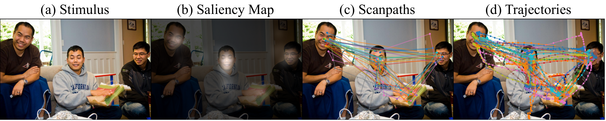
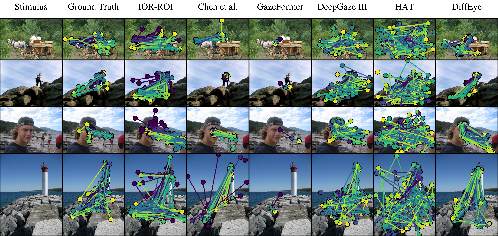
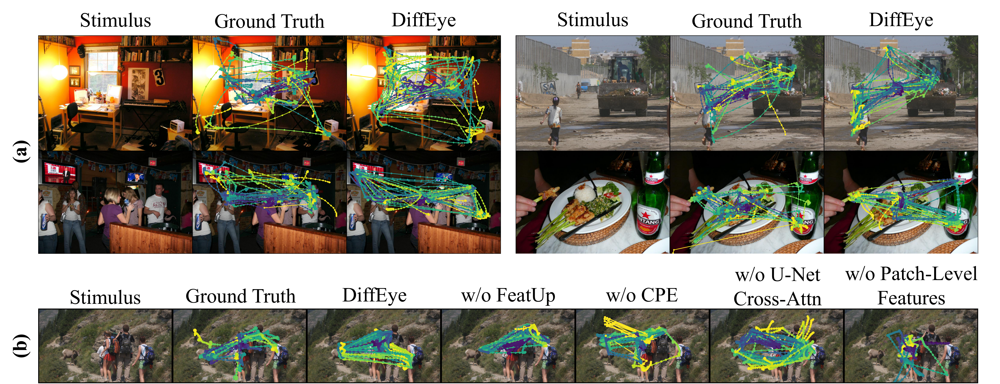
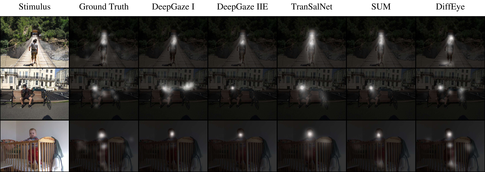

Figure 1: Comparison of different eye-tracking data types.

(a) Original visual stimulus. (b) Saliency maps highlight regions of interest but do not capture the temporal dynamics of human attention. (c) Scanpaths offer a compressed representation of eye movement trajectories. (d) Full eye movement trajectories, recorded via eye trackers, provide detailed insights into attention dynamics. Example from MIT1003; each color represents a different subject, emphasizing inter-subject variability.
Motivation: Existing models for predicting eye movements often use simplified data like scanpaths (c), which are sequences of discrete points. This discards the rich, continuous information found in raw eye-tracking trajectories (d). Furthermore, these models typically produce a single, deterministic output, failing to capture the natural variation in how different people look at the same image (as shown by the different colored paths). DiffEye addresses these limitations by training directly on raw trajectories to generate diverse and realistic eye movements that better reflect human visual attention.
Figure 2: An illustration of DiffEye.

(a) End-to-end training: noise is added to trajectories; FeatUp extracts patch features; both pass through the CPE module and a U-Net with cross-attention, optimized via diffusion loss. (b) CPE aligns trajectory positions with image patch positions. (c) Inference: starting from noise, the model denoises to produce an eye-movement trajectory, which can be converted into scanpaths or saliency maps.
Figure 3: Qualitative comparison of scanpath generation.

Scanpaths generated by DiffEye and baseline models are shown alongside ground truth across multiple scenes. Each row is a stimulus; columns show each method’s scanpaths.
Figure 4: Qualitative analysis and ablation study of continuous eye-movement trajectory generation.

(a) Multiple trajectories generated by DiffEye with ground-truth overlays across several scenes. (b) Effect of removing FeatUp, CPE, U-Net cross-attention, and patch-level features on trajectory quality.
Figure 5: Qualitative comparison of saliency map predictions.

Saliency maps produced by DiffEye and baseline models alongside ground truth for multiple scenes. Rows correspond to different stimuli; columns show the stimulus, ground truth, and each model’s prediction.